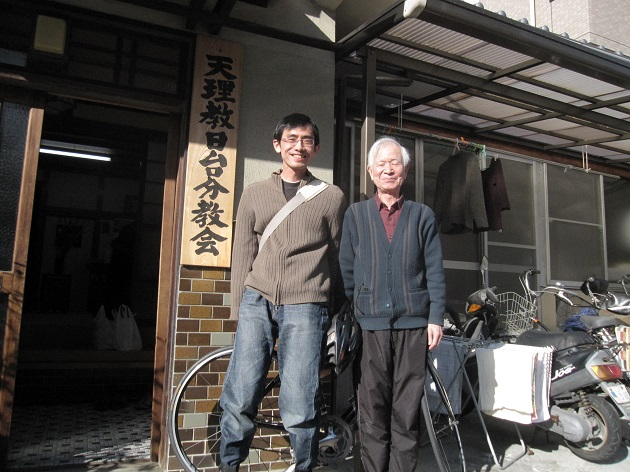
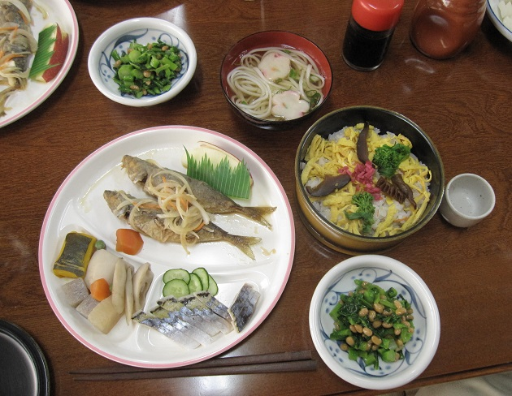

首頁 │ 三原典 │ 演講稿 │ 教理 │ 文章 │ 學習資源
松山市的奇遇 謝匡宇  3月初去四國旅行的遊記。 －－ 客船從吳港出發，經過幾個小島，2個小時後抵達松山觀光港。松山天氣晴朗，比廣島又熱了一些。騎車約半小時延著地圖路線進入市區，泊宿的旅館就在知名的道後溫泉附近。寄放好行李，就朝著目標松山城前進。但就在路上發生意想不到的事情。 從道後溫泉出發後稍微往南行，再往西行延松山城北面的東西向馬路前進。突然，在右手邊看到一間老房子，門柱上掛有「天理教XX分教會」的牌子。旅行前，照顧我的先生特別叮嚀：「一路上有父母神保祐才能平安，經過教會的時候記得拜拜致謝。」 看到窗戶內有人影，我敲了敲窗戶，老太太知道我來意後叫老先生開門。 「我從天理來旅行。能不能讓我進去拜拜？」 「你從哪裡過來？」 「昨天先到廣島，剛剛才坐船來松山。我從台灣來的。」 「台灣！」老先生眼睛一亮，看似吃了一驚的樣子。 他連忙穿鞋走到門口，指著教會的牌子：「這裡是『日台分教會』。我在基隆出生！教會原本在基隆，戰爭結束才搬到這裡！」 真是不可思議！老先生於是跟房子裡的人說我的來歷，大家聽了都露出驚訝的表情。神殿內擺出長桌，大伙人正在用餐的樣子。我在拜拜的同時，主婦們已經為我準備了餐點。 「今天是祭典日。剛剛才拜完開始用餐，你來的正是時候。」拜拜結束後老先生說。 老先生拿出教會史。教會在昭和九年(1934年)成立，他本人1940年出生，戰後遷回日本。這些年回去過台灣幾次。 媳婦說：「兒子去年底因為棒球的關係去台灣比賽，還到嘉義去看以前嘉義棒球隊的學校。」 「是電影『Kano』的關係嗎？」我問。 「『Kano』裡嘉義棒球隊的第一任總教練是松山出生的。」媳婦說。 旁邊一位叔叔補充：「松山市和台北的松山有締結組妹市關係。」 老先生繼續指著教會史，說明教會遷到松山以前的延革。  這天3號是日台分教會每個月拜拜的日子。教會特別準備好吃的料理。今天來的人數不多，只有10人左右，一方面非假日，一方面也是天理教的現狀：老信者 感情非常好，像是家人一樣親密，但年青人精神上的參與度不高。原因和問題說起來很多，我認為最主要是教會組織100多年歷史發展下來，世襲再加上科層組織 已經變得過度龐大，主管單位失去對現實的敏感度。活動及訴求對年青人缺乏吸引力，也危及整個教團的未來。 在松山城還來得及參觀前我離開了教會。我告訴會長，等去年的電影「灣生回家」出DVD的時候一定會寄一片給他。
|